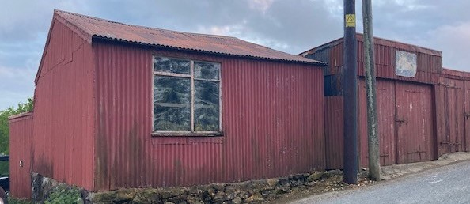

Garej Glandwr
Byddai Thomas Williams (Mom) yn mynd â phlant yr ysgol Sul am dripiau yn y 1960au a’r 1970au, gan amlaf i’r Rhyl neu i Landudno. Roedd cwt Moi Crydd ger garej Glandwr. Cofia Adam Hughes ei fod yn mynd efo John Albert Baum o gwmpas y pentref i gasglu hen esgidiau a mynd â nhw at Moi Crydd i’w trwsio ac yntau yn gwneud!

Garej Glandwr yn 2021